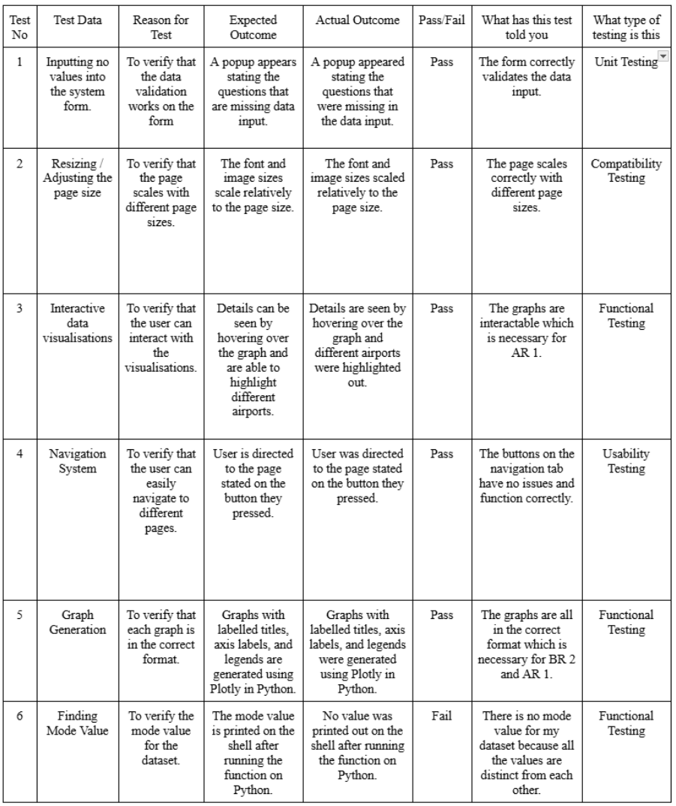

Testing(0 words)
Outcomes From Testing
Functional testing checks whether the system meets its functional requirements. The generation and interactivity of the graphs is a crucial part of my project and I needed to ensure it had the correct functionality. The Mode Value Test failed due to the fact that all the values were distinct from each other, therefore no mode value is present
Unit Testing uses smaller pieces of code to check its functionality. The validation form contained a variety of questions which all had to be tested separately which made this testing necessary.
Compatibility and Usability Testing allowed me to check if the user was able to navigate the website at ease without encountering major issues.
No further changes to the system were necessary following the testing as all showed positive results. This shows that the website is performing as expected and is ready for submission.
